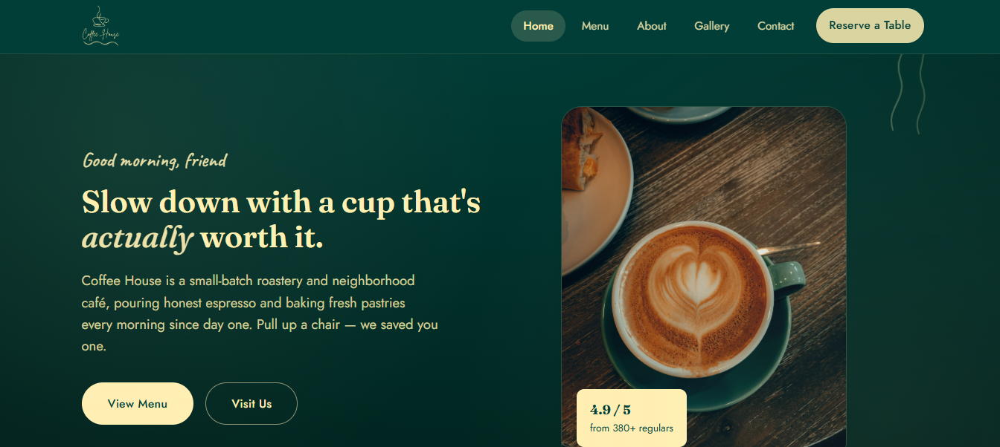

LARAVEL · REACT
Coffee Home
Un site moderne et responsive conçu pour un coffee shop. Le projet comprend une interface personnalisée, une identité visuelle chaleureuse, un logo et une palette de couleurs dédiée.
TypeSite vitrine
TechnologiesLaravel, React